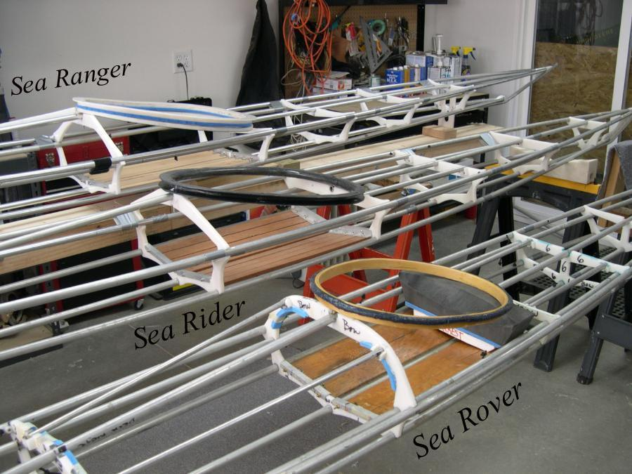

| Various Coamings | Menu Last Page Next Page |
|

Various Coamings - Sea Ranger HDPE coaming with baseplate ( 22"X16"), Sea Rider fiberglass coaming without baseplate (22"X16"), and Sea Rover laminated wood coaming ( 19"X 16"). The wood coaming is free standing ( no attachment bolts), and has no baseplate. The fiberglass coaming can be attached in the same manner (Velcro and no baseplate), but uses attachment bolts at cross sections 4 and 5. The HDPE coaming with or without baseplate can be constructed from plywood for less expense and lighter weight. This option, in addition to the alumium freestanding coaming just described, gives the builder 6 coaming options.
|
|